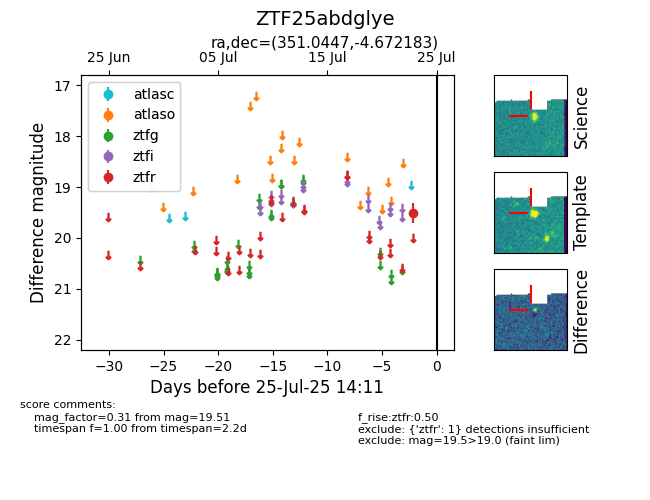

Target ZTF25abdglye at 2025-08-06 17:45, see:
FINK: fink-portal.org/ZTF25abdglye
Lasair: lasair-ztf.lsst.ac.uk/objects/ZTF25abdglye
ALeRCE: alerce.online/object/ZTF25abdglye
alt names
ZTF25abdglye (ztf,fink)
coordinates:
equatorial (ra, dec) = (351.0447,-4.67218)
galactic (l, b) = (76.2654,-59.38989)
photometry
last ztfr=19.51
1 ztfr detections
